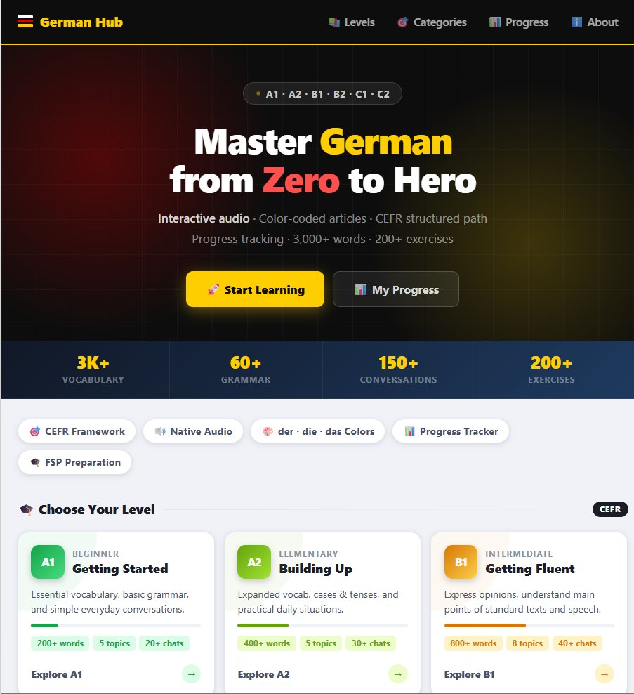
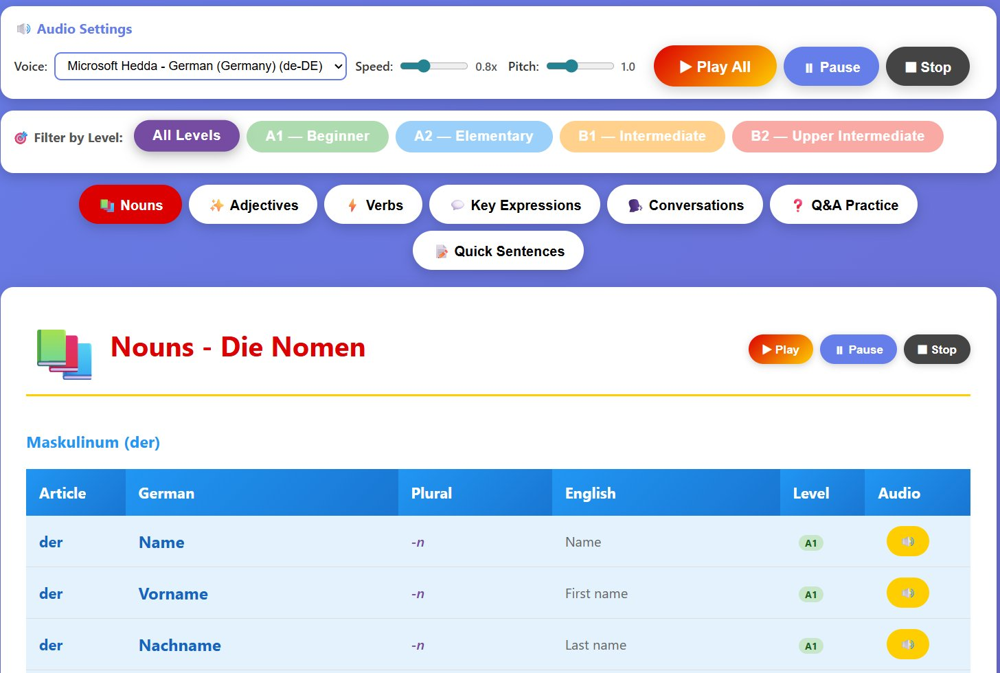
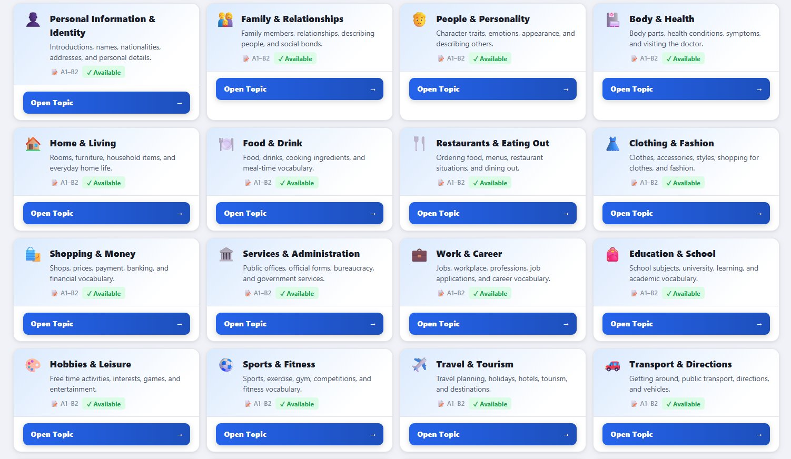

A fully static, browser-native German language learning platform — no npm, no bundlers, no CDN imports. 3,000+ vocabulary entries, 60+ grammar topics, and a specialised Fachsprachenpüfung (FSP) module for healthcare professionals.

Content spans the complete European language framework — from absolute beginner A1 all the way to C2 mastery — all filterable in real-time without a page reload.
Every noun is displayed with its grammatical gender colour — blue for der, red for die, green for das — consistently applied across all 3,000+ entries to build intuitive gender recognition.
Text-to-speech via the Web Speech API with customisable speed, pitch, and voice selection. Zero server calls for privacy and speed. Sequential audio playback with keyboard shortcuts for hands-free study.
Dedicated Fachsprachenpüfung preparation module covering 10 legal and professional topics for pharmacy and healthcare professionals seeking German language certification for medical licensing.
Modular JavaScript engines for vocabulary drilling and grammar exercises — all vanilla JS, no framework. Real-time CEFR filtering, thematic grouping, and progress tracking without a single npm package.
No npm, no bundlers, no CDN imports. Pure HTML5, CSS3, and vanilla JavaScript. Loads instantly, works offline, forkable on any static host, and will keep running indefinitely without dependency rot.
Vocabulary organised into 25 thematic categories — from everyday conversation to medical and legal terminology — all filterable in real-time for targeted study sessions.
Each grammar topic includes a structured explanation, worked examples, and interactive exercises with immediate feedback. Covers Kasus, Verb conjugation, Konjunktiv, Passiv, and all major German grammar structures up to C2.

A specialised section covering the clinical language exam required for foreign-trained pharmacists and doctors seeking Approbation in Germany. 10 legal and professional topics with domain-specific vocabulary and scenario training.

Framework-free development was a deliberate choice — not a limitation. The result is a platform that runs anywhere, loads in milliseconds, and will never break due to a deprecated library or an npm security vulnerability.